Cuando mires para el tablón yo voy a estar siempre con vos.
— La Hinchada Matadora
Grande por su historia, gigante por su gente.
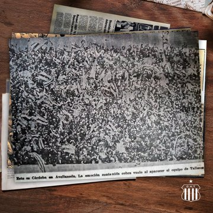
El día que Talleres fue local en Avellaneda, fue un "Cordobazo". Una marea albiazul invadió Buenos Aires demostrando que la pasión cordobesa no conoce fronteras.
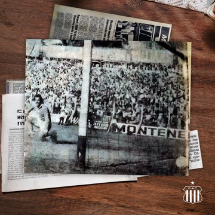
En la imagen, el arquero de Newell´s viendo como Fachetti hace el 1-1 en un partido historico donde Talleres quedó muy cerca de la clasificación.
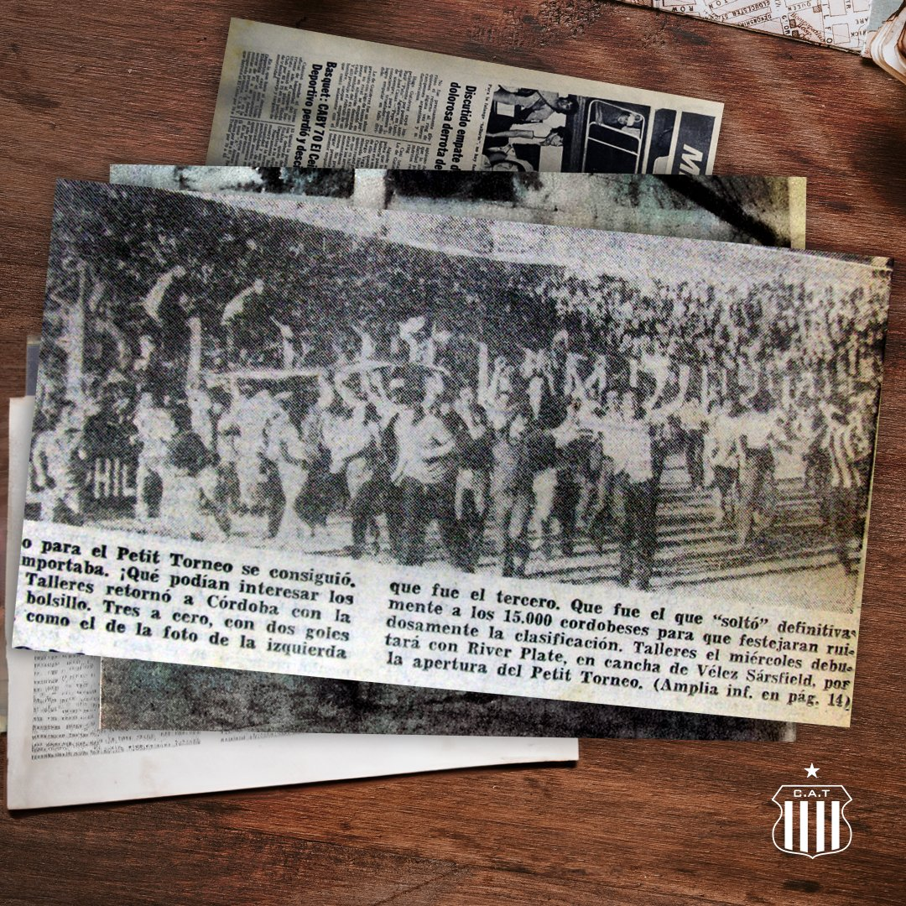
"Córdoba se hizo país en Buenos Aires", éste día Talleres le proporcino un 3-0 a su rival clasificando a la ronda final del Nacional.
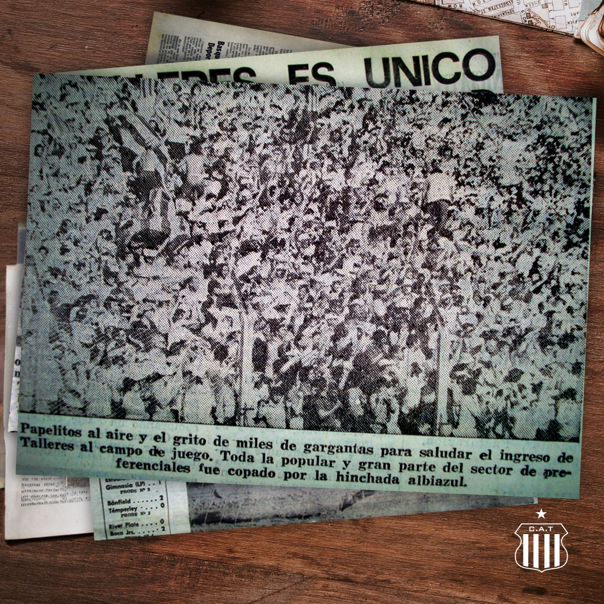
Una costumbre copar el estadio de Newell´s, ese dia los hinchas albiazules festejaron la punta absoluta en la zona "D".
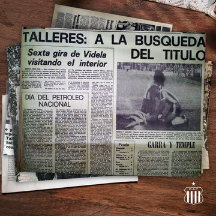
La "T" consiguió el empate sobre el final del partido con un gol deCHerini y de esta forma logró la clasificación a las fases finales del torneo.
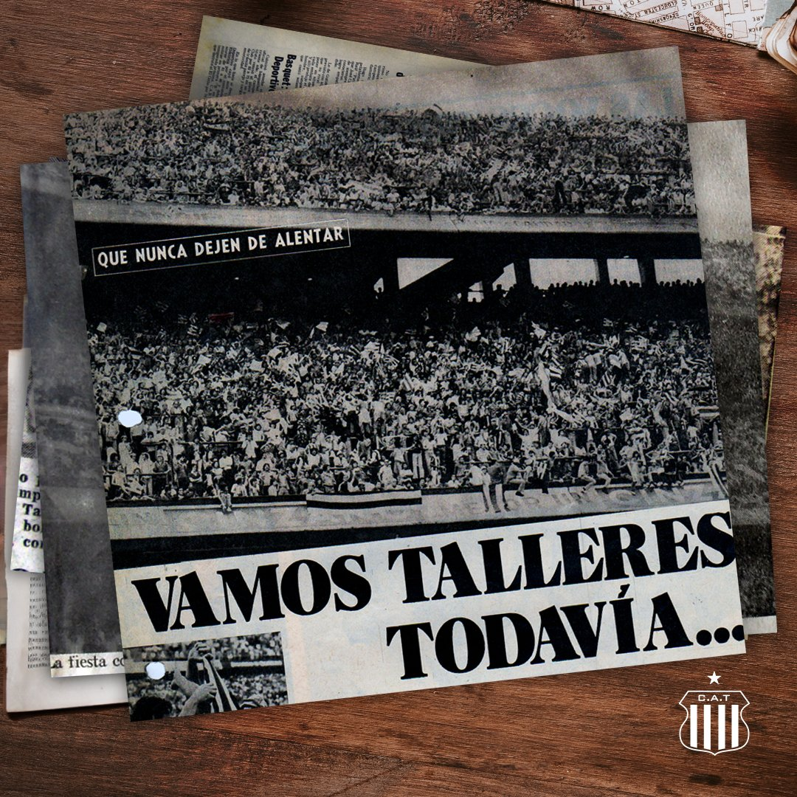
En la imagen, el acompañamiento de los hinchas que coparon las miticas tribunas de La Bombonera.
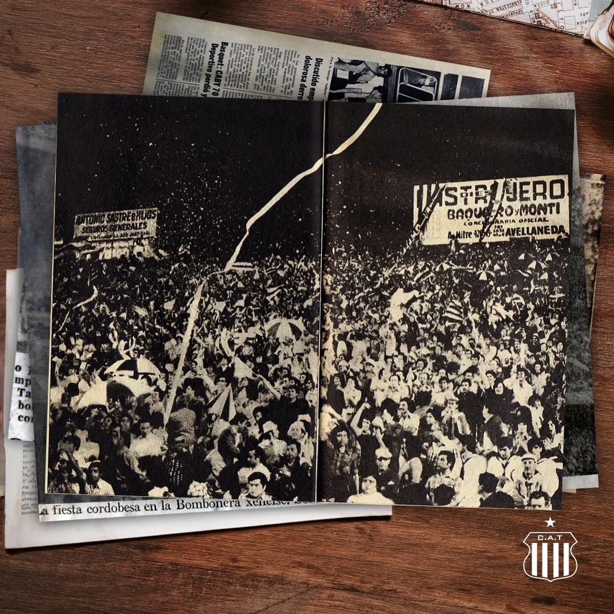
Talleres logró empatar un controversial encuentro en el primer partido de la final por el Nacional 1977.
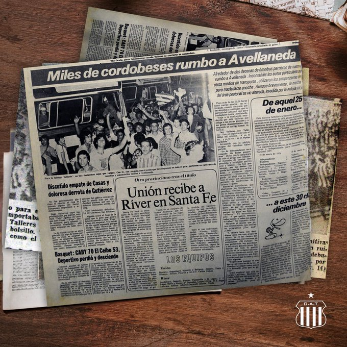
Está vez el seguimiento de los hinchas fue igual a la final del torneo anterior pero está vez por la semifinal del Nacional 1978.
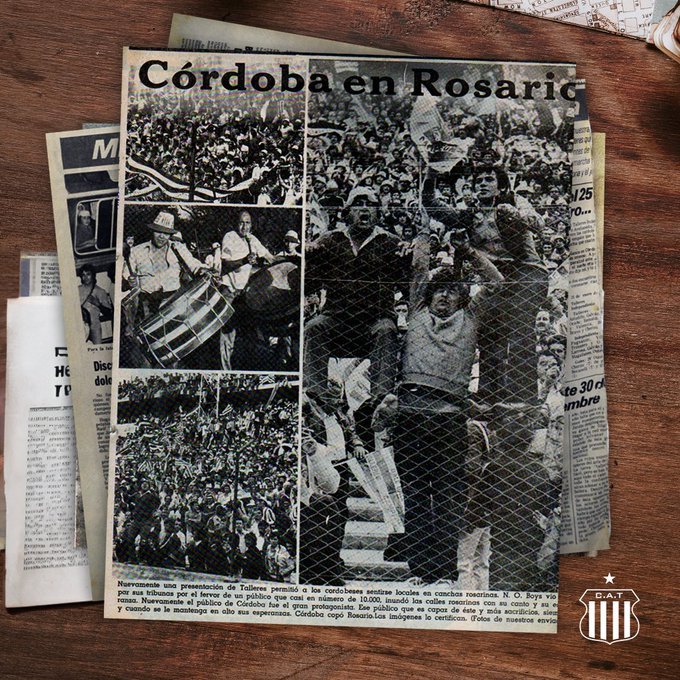
Talleres puntero e invicto empataba contra los rosarinos 1-1 con gol de Guerini a los 47'.
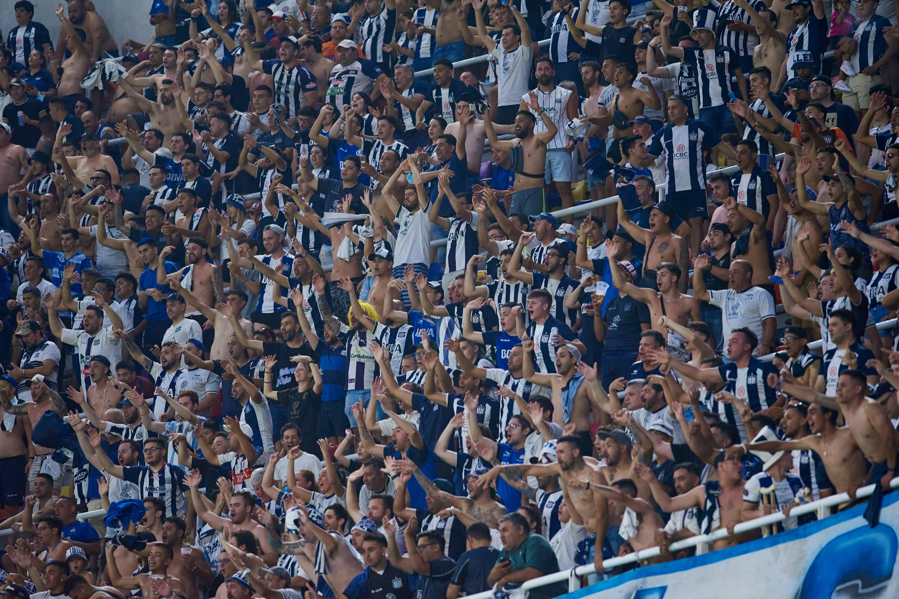
La primera final de un torneo nacional despues de 43 años, el acompañamiento fue acorde a la sitaución.
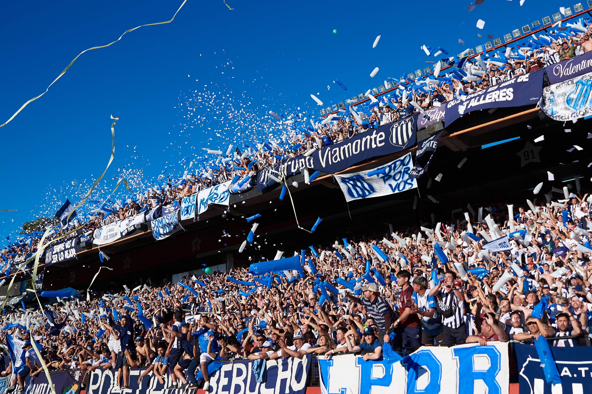
Una multitud viajó a Rosario para presenciar como Talleres ingresaba por segundo año consecutivo a la final de la Copa Argentina.
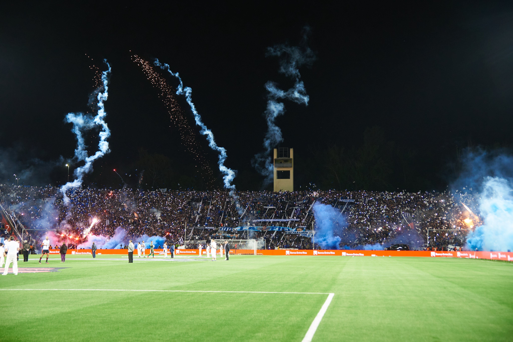
La mayor convocatoria de la historia del fútbol cordobes, más de 30mil almas viajaron a Mendoza.
Cuando mires para el tablón yo voy a estar siempre con vos.
— La Hinchada Matadora